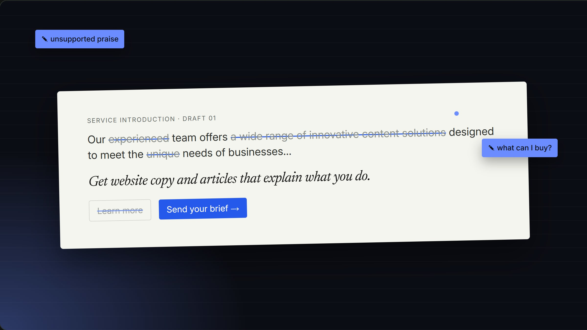

04Writing & editing · Original demonstration
This sentence has 25 words and tells you nothing.
One vague sentence, followed from the draft to a card that works.
Scroll: read, edit, ready
The agency and its service offer are fictional. This is not a commissioned edit.

01Read
Read it as the client would.
Twenty-five friendly words. None of them says what a client can buy.
The first draft: Our experienced team offers a wide range of innovative content solutions designed to meet the unique needs of businesses looking to enhance their online presence.
AK · 01Positive isn’t the same as clear.
Then name what they get.
Website copy and articles. The praise goes, and the offer takes its place.
The rewrite: Get website copy and articles that explain what you do.
02Edit
Put the answer up front.
Grey boxes first. The label, the new line, then the next step.
AK · 02What, how, and what next.
Set it on paper.
Pale paper, black ink and a blue pen for every cut.
03Ready
Run the edit live.
It plays on the Work page. With reduced motion, it shows the finished edit.
AK · 03The cuts stay visible.

- 01Read
- 02Edit
- 03Ready
I read it, edited it and made it ready.
From the first draft to the live page, you talk to me.
For the curiousThe video, the full kit, every version and how it was checked
- Project
- Original demonstration
- Role
- Writing & editing
- Deliverable
- Before, after & editorial notes
- Tools
- Line and structural editing · Astro for the demo
The kit: what Editing demonstration shipped, beyond the pages
Three full editsTracked changes, every reason
- Physical therapy page: from brochure to first-visit guideClinic service page section (~300 words) · 273 → 230 words · 10 changes“The opening was throat-clearing with an unsupported “state-of-the-art” claim; leading with the patient’s goal gives the reader a reason to keep going.”
- New-family intake email: one clear next step, no health data by emailPatient email: new-family welcome and intake reminder (~200 words) · 199 → 218 words · 10 changes“The subject line now carries the action and the deadline, so the inbox preview does the work even if the email is never opened.”
- Skin-check article: calm, accurate and useful to a first-timerBlog post: intro + one section (~350 words) · 347 → 353 words · 10 changes“The post can’t deliver “everything”; the new title matches the question people search for and what the section actually covers.”
Each draft was written for this demonstration; none is a real client’s text.
The receipts
The brief
A paragraph with plenty of words and very little information. What does the reader actually need?
The fictional brief: a small content agency needs a service introduction. The starting copy sounds positive but leaves the reader’s three real questions unanswered.
- 01Say what someone can commission
- 02Explain how the work moves
- 03Tell the reader what to do next
All 4 versionsOne paragraph, four passes.
The same copy, from first draft to a call to action someone can act on.
The draft
“Our experienced team offers a wide range of innovative content solutions…”
Positive, but it leaves the reader guessing what they can buy.
The markup
“experienced · innovative · unique · content solutions”
Every claim without evidence and every vague noun gets flagged.
The edit
“Get website copy and articles that explain what you do.”
Deliverables named; the brief → draft → feedback → final sequence explained.
The next step
“Send your brief”
The call to action tells the reader exactly what happens next.
An original demonstration prepared for this portfolio.
The agency and service offer are fictional. This is not a commissioned edit or a measured conversion result.